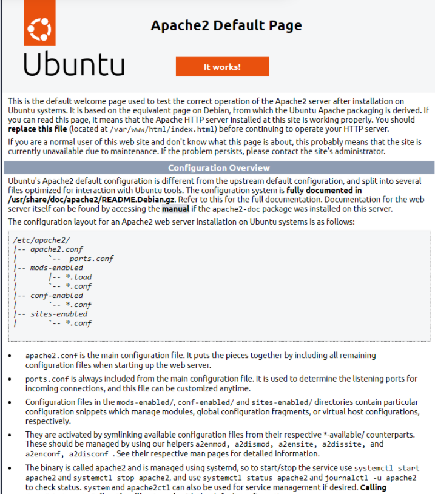
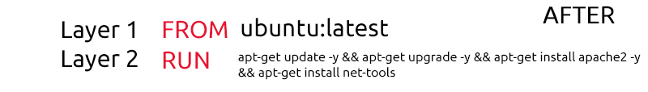

Dockerfiles
Dockerfiles play an essential role in Docker. Dockerfiles is a formatted text file which essentially serves as an instruction manual for what containers should do and ultimately assembles a Docker image.
You use Dockerfiles to contain the commands the container should execute when it is built. To get started with Dockerfiles, we need to know some basic syntax and instructions. Dockerfiles are formatted in the following way:
INSTRUCTION argumentFirst, let’s cover some essential instructions:
| Instruction | Description | Example |
|---|
| FROM | This instruction sets a build stage for the container as well as setting the base image (operating system). All Dockerfiles must start with this. | FROM ubuntu |
| RUN | This instruction will execute commands in the container within a new layer. | RUN whoami |
| COPY | This instruction copies files from the local system to the working directory in the container (the syntax is similar to the cp command). | COPY /home/cmnatic/myfolder/app/ |
| WORKDIR | This instruction sets the working directory of the container. (similar to using cd on Linux). | WORKDIR /
(sets to the root of the filesystem in the container) |
| CMD | This instruction determines what command is run when the container starts (you would use this to start a service or application). | CMD /bin/sh -c script.sh |
| EXPOSE | This instruction is used to tell the person who runs the container what port they should publish when running the container. | EXPOSE 80
(tells the person running the container to publish to port 80 i.e. docker run -p 80:80) |
Now that we understand the core instructions that make up a Dockerfile, let’s see a working example of a Dockerfile. But first, I’ll explain what I want the container to do:
1. Use the “Ubuntu” (version 22.04) operating system as the base.
2.
Set the working directory to be the root of the container.3. Create the text file “helloworld.txt”.
# THIS IS A COMMENT
# Use Ubuntu 22.04 as the base operating system of the container
FROM ubuntu:22.04
# Set the working directory to the root of the container
WORKDIR /
# Create helloworld.txt
RUN touch helloworld.txtRemember, the commands that you can run via the
RUN instruction will depend on the operating system you use in the
FROM instruction. (In this example, I have chosen Ubuntu. It’s important to remember that the operating systems used in containers are usually very minimal. I.e., don’t expect a command to be there from the start (even commands like
curl,
ping, etc., may need to be installed.)
Building Your First Container
Once we have a Dockerfile, we can create an image using the docker build command. This command requires a few pieces of information:1. Whether or not you want to name the image yourself (we will use the
-t (tag) argument).
2. The name that you are going to give the image.
3. The location of the Dockerfile you wish to build with.
I’ll provide the scenario and then explain the relevant command. Let’s say we want to build an image - let’s fill in the two required pieces of information listed above:
1. We are going to name it ourselves, so we are going to use the
-t argument.
2. We want to name the image.
3. The Dockerfile is located in our current working directory (
.).
The Dockerfile we are going to build is the following:
# Use Ubuntu 22.04 as the base operating system of the container
FROM ubuntu:22.04
# Set the working directory to the root of the container
WORKDIR /
# Create helloworld.txt
RUN touch helloworld.txtThe command would look like so:
docker build -t helloworld . (we are using the dot to tell Docker to look in our working directory). If we have filled out the command right, we will see Docker starting to build the image: A terminal showing the building process of the "helloworld" image
cmnatic@thm:~$ docker build -t helloworld .
Sending build context to Docker daemon 4.778MB
Step 1/3 : FROM ubuntu:22.04
22.04: Pulling from library/ubuntu
2b55860d4c66: Pull complete
Digest: sha256:20fa2d7bb4de7723f542be5923b06c4d704370f0390e4ae9e1c833c8785644c1
Status: Downloaded newer image for ubuntu:22.04
---> 2dc39ba059dc
Step 2/3 : WORKDIR /
---> Running in 64d497097f8a
Removing intermediate container 64d497097f8a
---> d6bd1253fd4e
Step 3/3 : RUN touch helloworld.txt
---> Running in 54e94c9774be
Removing intermediate container 54e94c9774be
---> 4b11fc80fdd5
Successfully built 4b11fc80fdd5
Successfully tagged helloworld:latest
cmnatic@thm:~$ Great! That looks like a success. Let’s use
docker image ls to now see if this image has been built:
Using the "docker image ls" command to confirm whether or not our image has successfully built
cmnatic@thm:~$ docker image ls
REPOSITORY TAG IMAGE ID CREATED SIZE
helloworld latest 4b11fc80fdd5 2 minutes ago 77.8MB
ubuntu 22.04 2dc39ba059dc 10 days ago 77.8MB
cmnatic@thm:~$ Note: Whatever base operating system you list in the
FROM instruction in the Dockerfile will also be downloaded. This is why we can see two images:
1. helloworld (our image).
2. ubuntu (the base operating system used in our image).
You will now be able to use this image in a container. Refer to the “Running Your First Container” task to remind you how to start a container.
Levelling up Our Dockerfile
Let’s level up our Dockerfile. So far, our container will only create a file - that’s not very useful! In the following Dockerfile, I am going to:
1. Use Ubuntu 22.04 as the base operating system for the container.
2. Install the “apache2” web server.
3. Add some networking. As this is a web server, we will need to be able to connect to the container over the network somehow. I will achieve this by using the
EXPOSE instruction and telling the container to expose port
80.
4. Tell the container to start the “apache2” service at startup. Containers do not have service managers like
systemd (this is by design - it is bad practice to run multiple applications in the same container. For example, this container is for the apache2 web server - and the apache2 web server only).
# THIS IS A COMMENT
FROM ubuntu:22.04
# Update the APT repository to ensure we get the latest version of apache2
RUN apt-get update -y
# Install apache2
RUN apt-get install apache2 -y
# Tell the container to expose port 80 to allow us to connect to the web server
EXPOSE 80
# Tell the container to run the apache2 service
CMD ["apache2ctl", "-D","FOREGROUND"]For reference, the command to build this would be
docker build -t webserver . (assuming the Dockerfile is in the same directory as where you run the command from). Once starting the container with the appropriate options (
docker run -d --name webserver -p 80:80 webserver), we can navigate to the IP address of our local machine in our browser!
The web server works! Currently, Apache2 is serving the default files because we have not added our own to the container.
Optimising Our Dockerfile
There’s certainly an art to Docker - and it doesn’t stop with Dockerfiles! Firstly, we need to ask ourselves why is it essential to optimise our Dockerfile? Bloated Dockerfiles are hard to read and maintain and often use a lot of unnecessary storage! For example, you can reduce the size of a docker image (and reduce build time!) using a few ways:
1. Only installing the essential packages. What’s nice about containers is that they’re practically empty from the get-go - we have complete freedom to decide what we want.
2. Removing cached files (such as APT cache or documentation installed with tools). The code within a container will only be executed once (on build!), so we don’t need to store anything for later use.
3. Using minimal base operating systems in our
FROM instruction. Even though operating systems for containers such as Ubuntu are already pretty slim, consider using an even more stripped-down version (i.e.
ubuntu:22.04-minimal). Or, for example, using Alpine (which can be as small as 5.59MB!).
4. Minimising the number of layers - I’ll explain this further below.
Each instruction (I.E.
FROM,
RUN, etc.) is run in its own layer. Layers increase build time! The objective is to have as few layers as possible. For example, try chaining commands from
RUN together like so:
Before:FROM ubuntu:latest
RUN apt-get update -y
RUN apt-get upgrade -y
RUN apt-get install apache2 -y
RUN apt-get install net-tools -y A terminal showing five layers of a Dockerfile being built
cmnatic@thm:~$ docker build -t before .
--omitted for brevity--
Step 2/5 : RUN apt-get update -y
---> Using cache
---> 446962612d20
Step 3/5 : RUN apt-get upgrade -y
---> Running in 8bed81c695f4
--omitted for brevity--
cmnatic@thm:~$ After:FROM ubuntu:latest
RUN apt-get update -y && apt-get upgrade -y && apt-get install apache2 -y && apt-get install net-tools A terminal showing two layers of a Dockerfile being built
cmnatic@thm:~$ docker build -t after .
Sending build context to Docker daemon 4.78MB
Step 1/2 : FROM ubuntu
---> 2dc39ba059dc
Step 2/2 : RUN apt-get update -y && apt-get upgrade -y && apt-get install apache2 -y && apt-get install net-tools
---> Running in a4d4943bcf04
--omitted for brevity--
cmnatic@thm:~$ Note here how there are now only two build steps (this will be two layers, making the build much quicker). This is just a tiny example of a Dockerfile, so the build time will not be so drastic, but in much larger Dockerfiles - reducing the number of layers will have a fantastic performance increase during the build.
{kind=link}
{kind=link}